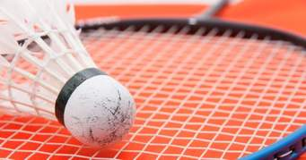
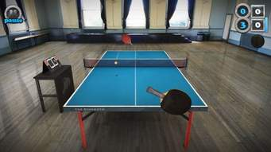
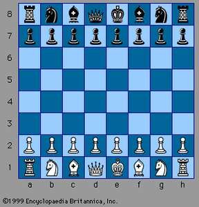
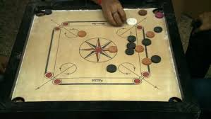
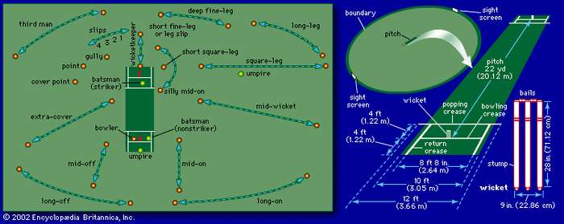
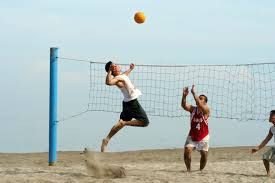

There are many indoor and outdoo games likes
Indoor Games
- Badminton
- Table tenis
- Chess
- Carom
Outdoor games
- Cricket
- Volleyball
Badminton
Badminton, court or lawn game played with lightweight rackets and a shuttlecock. Historically, the shuttlecock (also known as a “bird” or “birdie”) was a small cork hemisphere with 16 goose feathers attached and weighing about 0.17 ounce (5 grams).
Table tenis
Table tennis, also called (trademark) Ping-Pong, ball game similar in principle to lawn tennis and played on a flat table divided into two equal courts by a net fixed across its width at the middle. The object is to hit the ball so that it goes over the net and bounces on the opponent’s half of the table in such a way that the opponent cannot reach it or return it correctly. The lightweight hollow ball is propelled back and forth across the net by small rackets (bats, or paddles) held by the players. The game is popular all over the world. In most countries it is very highly organized as a competitive sport, especially in Europe and Asia, particularly in China and Japan.
Chess
Chess, one of the oldest and most popular board games, played by two opponents on a checkered board with specially designed pieces of contrasting colours, commonly white and black. White moves first, after which the players alternate turns in accordance with fixed rules, each player attempting to force the opponent’s principal piece, the King, into checkmate
Carrom
Carrom or Karom is a game that has long been played throughout India and South East Asia but the game has become increasingly popular throughout much of the rest of the world during the last century. There are a huge number of variations in the rules even though an international regulatory body and several major national bodies exist - even these have rule variations depending upon the situation. Masters Games has based the following rules on those from the UK Carrom Club, tailoring them for simplicity where possible.
Cricket
Cricket is played with a bat and ball and involves two competing sides (teams) of 11 players. The field is oval with a rectangular area in the middle, known as the pitch, that is 22 yards (20.12 metres) by 10 feet (3.04 metres) wide. Two sets of three sticks, called wickets, are set in the ground at each end of the pitch. Across the top of each wicket lie horizontal pieces called bails. The sides take turns at batting and bowling (pitching); each turn is called an “innings” (always plural). Sides have one or two innings each, depending on the prearranged duration of the match, the object being to score the most runs. The bowlers, delivering the ball with a straight arm, try to break (hit) the wicket with the ball so that the bails fall. This is one of several ways that the batsman is dismissed, or put out. A bowler delivers six balls at one wicket (thus completing an “over”), then a different player from his side bowls six balls to the opposite wicket. The batting side defends its wicket.
VolleyBall
Volleyball, game played by two teams, usually of six players on a side, in which the players use their hands to bat a ball back and forth over a high net, trying to make the ball touch the court within the opponents’ playing area before it can be returned. To prevent this a player on the opposing team bats the ball up and toward a teammate before it touches the court surface—that teammate may then volley it back across the net or bat it to a third teammate who volleys it across the net. A team is allowed only three touches of the ball before it must be returned over the net.